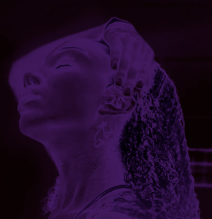

Como finalizar o cabelo ondulado 2C
O cabelo ondulado 2C possui cachos bem marcados da raiz até às pontas, então o processo de finalizar precisa focar na definição duradoura. Aqui, a dica novamente é a fitagem com produtos focados em definir os cachos para garantir que eles não desmanchem. A dica também é apostar no secador e difusor para garantir que os fios não pesem por conta da umidade excessiva. Ah, e abuse das misturinhas com gelatinas que garantam o volume e a definição dos fios!.
Você sabe a curvatura do seu cabelo?
Confira na tabela abaixo, a curvatura do fio do seu cabelo.
A higienização é o primeiro passo para tudo dar certo no cuidado da saúde capilar
* Primeiro, molhe bem o couro cabeludo,
* Shampoo somente no couro cabeludo,
* Massageie bem com a ponta dos dedos o couro cabeludo,
* Não puxe o shampoo para o comprimento e nem pontas.
Você percebeu que a higienização é somente
no couro cabeludo!
